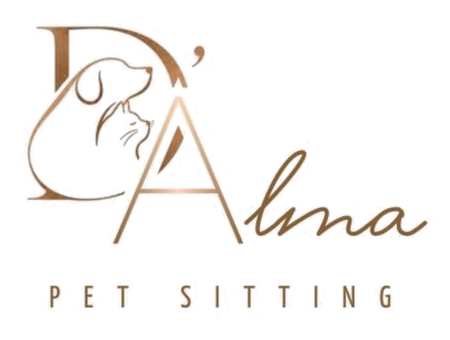

O trabalho
estendeu-se.
Mas ele continua à espera do passeio.
Entre reuniões e compromissos, o dia pode escapar-lhe. Descubra uma ajuda para manter os momentos lá fora.
Conhecer os passeios
Vamos conversarPET SITTING EM VISEU E ARREDORES
Para os dias em que não pode estar,
há passeios, companhia e cuidado com alma.
A VIDA NÃO PÁRA. OS LAÇOS TAMBÉM NÃO.
Há uma forma de estar presente em cada um deles.
Entre reuniões e compromissos, o dia pode escapar-lhe. Descubra uma ajuda para manter os momentos lá fora.
Conhecer os passeiosCada animal tem o seu ritmo e o seu lugar favorito. Conheça as visitas ao domicílio e combine o acompanhamento.
Descobrir as visitasConte-nos a sua situação, as datas e as necessidades do seu companheiro. Vamos conversar sobre pet sitting.
Explorar pet sittingTRÊS FORMAS DE CUIDAR
Para os dias em que o seu cão tem energia, mas a sua agenda tem outros planos.
Explorar este cuidadoUma presença em casa durante a sua ausência, com os cuidados a combinar consigo.
Explorar este cuidadoPrecisa de acompanhamento? Vamos perceber o apoio adequado ao seu companheiro.
Explorar este cuidadoD’ALMA · PET SITTING
Uma relação começa muito antes do primeiro passeio. Começa por conhecer quem cuida, esclarecer dúvidas e falar sobre o que torna o seu animal único.
Conhecer a D’almaPOR AQUI, HÁ CUIDADO
Passeios, visitas ao domicílio e pet sitting em Viseu e arredores. Diga-nos a sua localidade para confirmar a área de atendimento.
Consultar a minha zonaO PRÓXIMO CAPÍTULO É CONVOSCO
Conte-nos de quem precisa de cuidar.
O resto começa com uma conversa.